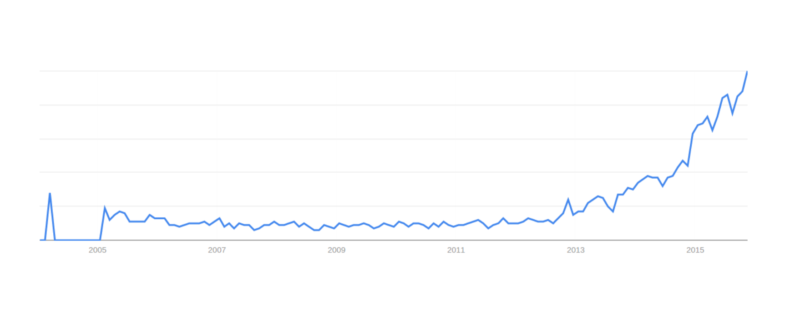
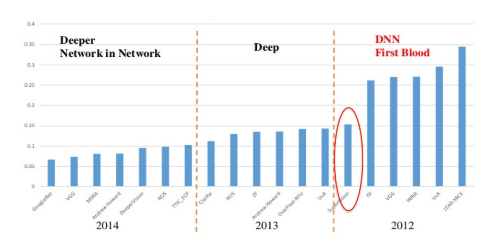

A Quick Tour of Deep Learning History
I read a bunch of papers and articles, and then wrote these cliffs notes so that
you don't have too.
I'll start off with some pictures:

Google trends results for "deep learning".

State-of-the-art in speech recogition. Take a look at that precipitous drop
after a decade of stagnation.

State-of-the-art in image recognition. See how the circled bar cut error
almost in half?
All this is deep learning. Lots of it is hype but lots of it is also very cool.
The theory behind deep learning has roots as old as the 1970’s and earlier [1].
From the earliest days of pattern recognition, one goal of machine learning researchers
has been to automate the process of structuring data into features. The deep
learning architectures that were designed for this task were artificial neural nets,
and the method to train these networks was discovered independently by several groups
during the 70’s and 80’s [5].
In 1980, Kunihiko Fukushima drew inspiration from the visual cortex of the
human brain to invent a precursor of the Convolutional Neural Network. He
used this network to recognize photos of simple objects like numbers [2]. In
1989, Yann LeCun used a deep feedforward neural network to read handwritten
zip codes [3]. That same year, the ALVINN system used a three layer neural
network to train computer-controlled vehicles to steer correctly for 90 miles on
a public interstate highway [4].
Despite this promising start, deep learning was “largely forsaken by the machine
learning community and ignored by the computer-vision and speech-recognition
communities' in the 90’s and early 2000’s [5]. There was one simple reason for
this: neural networks were prohibitively slow to train. For example, it took
three days to train the zip-code reading network of LeCun [3].
Interest in deep learning was gradually revived in the 21st century. In 2007,
Geoffrey Hinton and others at the Canadian Institute for Advanced Research
(CIFAR) developed a method to pre-train networks [6]. This pre-training technique
took advantage of the advent of fast, conveniently programmable graphics
processing units (GPUs) and allowed researchers to train networks 10 to 20 times
faster than before [7]. This speedup meant that models could be taught how to
do things in hours or days instead of weeks or months.
The academic and industrial machine learning community soon took notice.
They used a variety of architectures to produce record-breaking results in many
artificial intelligence tasks. In 2009, deep neural networks produced record results
in speech recognition and vocabulary recognition [9]. By 2012, this architecture
was being deployed in many Android phones [5]. During ImageNet 2012,
an annual AI competition in which teams compete to produce the best image
recognizer, a deep convolutional network called AlexNet produced spectacular results,
nearly halving the error rates of their closest competitors [10]. Since then,
deep learning has entered a renaissance as industry and research leaders have
increasingly adopted deep learning techniques with impressive results [8].
Reading List
- Mitchell, Tom M. M achine Learning. New York: McGraw-Hill, 1997.
Print.
- Fukushima, Kunihiko. “Neocognitron: A Self-Organizing Neural Network
Model For A Mechanism Of Pattern Recognition Unaffected By Shift In
Position”. Biol. Cybernetics 36.4 (1980): 193-202. Web.
- LeCun, Y. et al. “Backpropagation Applied To Handwritten Zip Code
Recognition”. Neural Computation 1.4 (1989): 541-551. Web.
- Pomerleau, Dean. “ALVINN, An Autonomous Land Vehicle In A Neural
Network”. Carnegie − Mellon University Artificial Intelligence And
Psychology Project (1989): n. pag. Print.
- LeCun, Yann, Yoshua Bengio, and Geoffrey Hinton. “Deep Learning”.
Nature 521.7553 (2015): 436-444. Web.
- Hinton, Geoffrey. “Learning Multiple Layers Of Representation”.
Trends in Cognitive Sciences 11.10 (2007): n. pag. Print.
- Raina, Rajat, Anand Madhavan, and Andrew Ng. “Large Scale Deep
Unsupervised Learning Using Graphics Processors”. Proceedings
of the 26th International Conference on M achine Learning (2009):
n. pag. Print.
- ibm.com,. “IBM Launches Industry’s First Cognitive Consulting Practice”.
N.p., 2015. Web. 15 Dec. 2015.
- Dahl, George, and Dong Yu. “Context-Dependent Pre-Trained Deep Neural
Networks For Large-Vocabulary Speech Recognition”. IEEE Transactions
on Audio, Speech, and Language Proccessing 20.1(2011): n. pag. Print.
Krizhevsky, Alex, Ilya Sutskever, and Geoffrey Hinton. “ImageNet
Classification With Deep Convolutional Neural Networks”. Advances in
neural information processing systems (NIP S) (2012): n. pag. Print